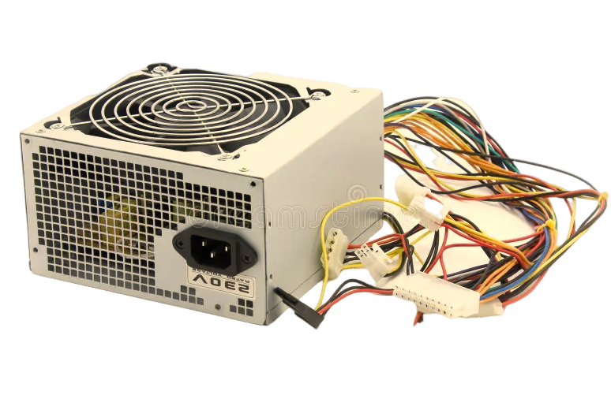

Fontes
O que é uma fonte?

Você nunca se perguntou como a energia chega para todas as partes do seu computador?
Todo componente eletrônico precisa de uma certa quantidade de energia para poder funcionar. E isso inclui as peças do computador.
A fonte de alimentação é um componente fundamental para a máquina. É nela que irá ocorrer o processo de transformação de energia para que todo o sistema funcione sem problemas.
.png)
A primeira fonte de alimentação
A primeira fonte de alimentação de computador do mundo foi desenvolvida por John Atanasoff para o computador Atanasoff-Berry em 1937. Esta fonte de alimentação fornecia a energia elétrica necessária para o funcionamento do computador.
No entanto, é importante notar que o Atanasoff-Berry Computer não era um computador totalmente eletrônico, mas sim um dispositivo que utilizava válvulas eletromecânicas e outros componentes para realizar cálculos.
Modelo mais moderno
A melhor fonte para PC do mercado atual é o modelo Akasa Venom Power, com 900 watts de potência e capacidade para lidar com processadores, placa de vídeo e os principais hardwares com boa frequência de entrada o equipamento é a escolha perfeita para quem busca capacidade e eficiência.
Características da fonte Akasa Venom Power
-
•Potência: 900 watts
-
•Eficiência: Mais de 85% de eficiência PFC ativo
-
•Conectores: ATX12V, ATX
-
•Modulação: Modular